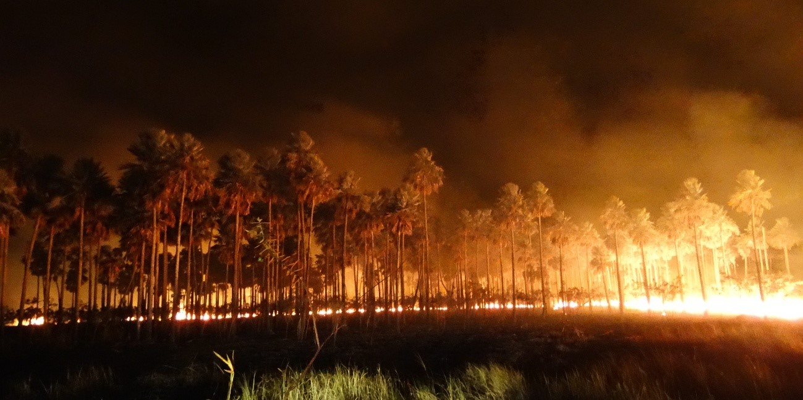

As queimadas no pantanal
O pantanal está situado em três países : Brasil, Bolívia e Paraguai . Este bioma é rico em biodiversidade de animais e vegetais , reconhecido mundialmente. Na última década , as queimadas no Pantanal vêm aumentando rapidamente por diversos motivos, dos quais os mais comuns são as causas humanas, que podem ser acidentais ou criminosas. Queimadas que prejudicam a fauna e flora de todo bioma fazendo com que a extinção seja acelerada , além de ajudar com a intensificação do efeito estufa , com o aquecimento global e a destruição da camada ozônio. A origem das queimadas nesta região está ligada em três fatores, sendo eles : ação humana , aumento de atividades agrícolas e pecuárias e o clima tropical aliado ao tempo seco . As queimadas e os desmatamento ,em grande porcentagem são feito para formação de pastagem ou para o aumento de terra em plantios . Os brasileiros pedem por ajuda do governo para conseguir controlar as queimadas com mais bombeiros , multas por queimadas , veterinários para animais e a potencialização da vigilância militar na região.
 https://images.app.goo.gl/hUh19qfxpEqGzix38Aluno(a): Emanuelly Braz Marçon Resende